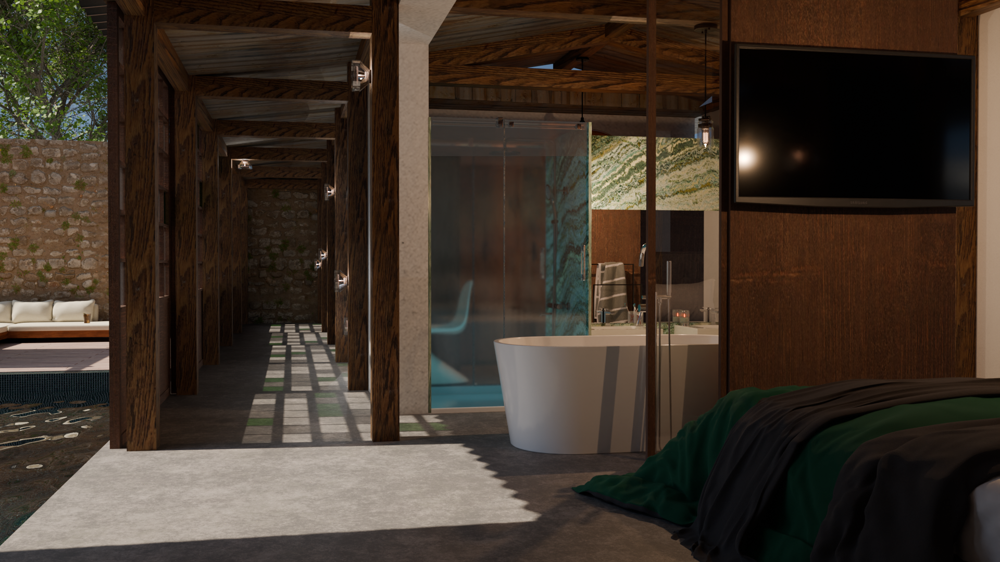

Old Barn
A former agricultural barn is now home to a family of 4. As well as working on architectural projections, this exercise involved developing technical skills in creating digital images and designing a building permit.